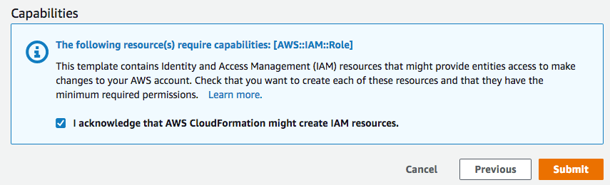

スタックセットの作成
スタックセットを作成するには、AWS Management Console を使用するか AWS CLI の AWS CloudFormation コマンドを使用します。self-managed 型または service-managed 型のアクセス許可を持つスタックセットを作成できます。
self-managed 型のアクセス許可を使用すると、特定のリージョンで特定の AWS アカウント にスタックインスタンスをデプロイできます。これを行うには、まず必要な IAM ロールを作成して、スタックセットの管理元アカウントとスタックインスタンスのデプロイ先のアカウントとの間に信頼関係を確立する必要があります。
service-managed 型のアクセス許可を使用すると、特定のリージョンで AWS Organizations によって管理されているアカウントにスタックインスタンスをデプロイできます。このモデルでは、必要な IAM ロールを作成する必要はありません。ユーザーの代わりに StackSets が IAM ロールを作成します。今後ターゲット組織または組織単位 (OU) に追加されるアカウントへの自動デプロイを有効にすることもできます。自動デプロイが有効な場合、ターゲットの組織または OU からスタックインスタンスが削除されると、StackSets はアカウントからスタックインスタンスを自動的に削除します。
セルフマネージド型のアクセス許可を持つスタックセットの作成
トピック
AWS Management Console を使用してセルフマネージド型のアクセス許可を持つスタックセットを作成する
AWS CloudFormation コンソール (https://console.aws.amazon.com/cloudformation
) を開きます。 -
ナビゲーションペインから [StackSets] を選択します。
-
[StackSets] ページの上部で [Create StackSet (StackSet の作成)] を選択します。
-
[Prerequisite - Prepare template (前提条件 - テンプレートの準備)] で [Use a sample template (サンプルテンプレートの使用)] を選択します。
-
[サンプルテンプレートを選択] で、ドロップダウンメニューから [AWS 設定の有効化] テンプレートを選択します。[Next] (次へ) を選択します。

-
[Specify StackSet details (StackSet 詳細の指定)] ページで、次の情報を入力します。
-
スタックセットの名前を指定します。スタックセット名はアルファベット文字で始まり、文字、数字、ハイフンのみを含める必要があります。このウォークスルーでは、
my-awsconfig-stacksetという名前を使用します。 -
プロンプトが表示され、AWS Config に使用されるパラメータの値を指定します。これらのパラメータに関する詳細については、「AWS Config デベロッパーガイド」の「コンソールによる AWS Config の設定」を参照してください。このウォークスルーでは、すべての AWS Config パラメータをデフォルト設定のままにしておきます。
-
ログの内容に基づいて、E メールで Amazon Simple Notification Service (SNS) の更新を設定するには、TopicARN および NotificationEmail パラメータを使用します。このウォークスルーでは、Amazon SNS の更新は設定しません。
-
更新と通知の配信チャネルを設定するには、DeliveryChannelName および Frequency パラメータを使用します。AWS Config の配信チャネルでの詳細については、「AWS Config デベロッパーガイド」の「Managing the delivery channel」(配信チャネルの管理) を参照してください。このウォークスルーでは、この領域はデフォルト設定のままにします。
-
-
AWS Config のパラメータの指定が完了したら、[次へ] を選択します。
-
[Configure StackSet options (StackSet オプションの設定)] ページで、キーと値のペアを指定してタグを追加します。このウォークスルーでは、[Test] (テスト) の値を持つ [Stage] (ステージ) というタグを作成します スタックセットに適用するタグは、スタックに作成されるすべてのリソースに適用されます。AWS でのタグの使用方法に関する詳細については、「AWS Billing and Cost Management ユーザーガイド」の「Using cost allocation tags」(コスト配分タグの使用) を参照してください。
[Permissions] (アクセス許可) は指定しないでください。
-
[Execution configuration] (実行構成) の場合、StackSets が競合しないオペレーションを同時に実行し、競合するオペレーションをキューに入れるように、[Active] (アクティブ) を選択します。競合するオペレーションが終了すると、StackSets はキューに入っているオペレーションをリクエスト順に開始します。
注記
既に実行中のオペレーションまたはキューに入っているオペレーションがある場合、StackSets はオペレーションが競合しない場合でもすべての受信オペレーションをキューに入れます。
そのスタックセットに実行中のオペレーションまたはキューに入っているオペレーションがある間は、スタックセットの実行構成を変更することはできません。
-
[Next] (次へ) をクリックします。
-
[Set deployment options (デプロイオプションの設定)] ページで、スタックセットのスタックをデプロイしたいアカウントおよびリージョンを提供してください。
AWS CloudFormation は、リージョンのデプロイ失敗が指定された障害耐性を超えない限り、最初のリージョン内の指定されたアカウントにスタックをデプロイし、次のリージョンに移行し、それが繰り返されます。
-
[アカウント] で [Deploy stacks in accounts (スタックをアカウントにデプロイ)] を選択します。ターゲットアカウント番号をテキストボックスに貼り付け、複数の数字をカンマで区切ります。
-
[Specify regions (リージョンの指定)] で [米国東部 (バージニア北部) リージョン] を選択します。[米国西部 (オレゴン) リージョン] も同様に選択します。米国西部 (オレゴン) リージョン の横にある上矢印を選択して、リストの最初の項目になるように移動します。[Specify regions (リージョンの指定)] のリージョンの順序に従って、デプロイの順序が決まります。
-
[Deployment options (デプロイメントオプション)] で次のようにします。
-
[Maximum concurrent accounts] (同時アカウントの最大数) については、デフォルト値の [Number] (数値)と 1 をそのまま使用します。
つまり、AWS CloudFormation は一度に 1 つのアカウントのみでスタックをデプロイします。
-
[Failure tolerance (障害耐性)] については、デフォルトの [数値] と [0] をそのまま使用します。
つまり、AWS CloudFormation が現在のリージョンでデプロイを停止し、残りのリージョンでのデプロイをキャンセルする前に、最大で 1 つのスタックデプロイが、指定されたリージョンの 1 つで失敗できるということを意味します。
-
-
リージョンの同時実行:
-
[Sequential] (順次) または [Parallel] (並列) を選択して、指定したリージョンの StackSets デプロイ順を決めます。デフォルトでは、[Sequential (順次)] が選択されています。
[Next] (次へ) を選択します。
-
![[Set Deployment Options (デプロイオプションの設定)] ページ](images/console-create-stackset-set-deploy-options.png)
-
-
[確認] ページで、設定とスタックセットのプロパティを確認します。変更するには、プロパティを変更する領域で [編集] を選択します。スタックセットを作成する前に、[CAPABILITY] 領域のチェックボックスをオンにし、スタックセットで作成しているリソースの一部が新しい IAM リソースやアクセス権限を必要とする場合があることを認識します。必要となる可能性がある許可の詳細については、本ガイドの「AWS CloudFormation テンプレートで IAM リソースを認識する」を参照してください。スタックセットを作成する準備ができたら、[Submit] (送信) を選択します。
 -
AWS CloudFormation がスタックセットの作成を開始します。スタックセット内のスタック作成の進捗と状況は、[送信] を選択した際に開くスタックセット詳細ページで確認できます。
![StackSets 詳細ページの [オペレーション] タブ](images/console-stackset-detail-operations.png)
AWS CLI を使用してセルフマネージド型のアクセス許可を持つスタックセットを作成する
AWS CLI コマンドを使用してスタックセットを作成する場合は、2 つの異なるコマンドを実行します。create-stack-set でテンプレートをアップロードしてスタックセットコンテナを作成し、create-stack-instances でスタックセット内にスタックを作成します。まず AWS CLI コマンド create-stack-set を実行し、AWS Config を有効にする AWS CloudFormation テンプレートのサンプルをアップロードし、それからスタックセット作成を開始します。
-
AWS CLI を開きます。
-
以下のコマンドを実行します。
--template-urlパラメータには、テンプレートを保存する Amazon S3 バケットの URL を入力します。このウォークスルーでは、my-awsconfig-stacksetパラメータの値として--stack-set-nameを使用します。また、StackSets が競合しないオペレーションを同時に実行し、競合するオペレーションをキューに入れるように、--managed-executionをアクティブにします。競合するオペレーションが終了すると、StackSets はキューに入っているオペレーションをリクエスト順に開始します。注記
既に実行中のオペレーションまたはキューに入っているオペレーションがある場合、StackSets はオペレーションが競合しない場合でもすべての受信オペレーションをキューに入れます。
そのスタックセットに実行中のオペレーションまたはキューに入っているオペレーションがある間は、スタックセットの実行構成を変更することはできません。
aws cloudformation create-stack-set \ --stack-set-name my-awsconfig-stackset \ --template-url https://s3.amazonaws.com/cloudformation-stackset-sample-templates-us-east-1/EnableAWSConfig.yml -
create-stack-setが完了したあと、list-stack-setsコマンドを実行してスタックセットが作成されたことを確認します。新しいスタックセットが表示結果で確認できます。aws cloudformation list-stack-sets -
create-stack-instancesAWS CLI コマンドを実行して、スタックセットにスタックインスタンスを追加します。このウォークスルーでは、us-west-2パラメータの値としてus-east-1および--regionsを使用します。次の例で示している通り、
FailureToleranceCountパラメータで0をMaxConcurrentCountに、1を--operation-preferencesに設定することで、障害耐性および同時アカウントの最大数を設定します。代わりに割合を適用するには、FailureTolerancePercentageまたはMaxConcurrentPercentageを使用します。このウォークスルーでは、割合ではなくカウントを使用します。注記
MaxConcurrentCountの値は、FailureToleranceCountの値に依存します。MaxConcurrentCountは、最大でFailureToleranceCountより 1 だけ多くなります。aws cloudformation create-stack-instances \ --stack-set-name my-awsconfig-stackset \ --accounts '["account_ID_1","account_ID_2"]' \ --regions '["region_1","region_2"]' \ --operation-preferences FailureToleranceCount=0,MaxConcurrentCount=1注記
オペレーションでの StackSet インスタンスデプロイの同時実行性は、
FailureToleranceCount-MaxConcurrentCountの値に依存し、最大でもFailureToleranceCountより 1 だけ多くなります。重要
別のオペレーションを開始する前に、オペレーションが終了するのを待ってください。一度に 1 つのオペレーションのみを実行できます。
-
スタックイスタンスが正常に作成されたことを確認します。
DescribeStackSetOperationを、ステップ 4 の出力の一部として返されるoperation-idと実行します。aws cloudformation describe-stack-set-operation \ --stack-set-name my-awsconfig-stackset \ --operation-idoperation_ID
サービスマネージド型のアクセス許可を持つスタックセットの作成
トピック
サービスマネージド型のアクセス許可を持つスタックセットを作成する際の考慮事項
サービスマネージド型のアクセス許可を持つスタックセットを作成する前に、次の点を考慮してください。
-
サービスマネージド型のアクセス許可を持つスタックセットは、委任された管理者によって作成されたスタックセットを含む、管理アカウントに作成されます。
-
スタックセットは、組織全体または指定した組織単位 (OU) をターゲットにすることができます。スタックセットが組織をターゲットにする場合、組織内のすべての OU のすべてのアカウントもターゲットとなります。スタックセットが指定した OU をターゲットにする場合、その OU 内のすべてのアカウントもターゲットとなります。
-
スタックセットが親 OU をターゲットにする場合、スタックセットは子 OU もターゲットにします。
-
複数のスタックセットで同じ組織または OU をターゲットにすることができます。
-
スタックセットは組織外のアカウントをターゲットにすることはできません。
-
スタックセットはネストされたスタックをデプロイできません。
-
StackSets は、管理アカウントが組織内または組織の OU 内にあっても、スタックインスタンスを組織のマスターアカウントにデプロイしません。
-
自動デプロイはスタックセットレベルで設定されます。OU、アカウント、リージョンを選択して自動デプロイを調整することはできません。
-
管理アカウントにサインインするために使用する IAM プリンシパルエンティティ (ユーザー、ロール、グループ) のアクセス許可によって、StackSets でデプロイが許可されるかどうかが決まります。組織にデプロイするアクセス許可を付与する IAM ポリシーの例については、「サービスマネージド型のスタックセットのアクセス許可を付与するサンプルポリシー」を参照してください。
-
委任された管理者は、組織内のアカウントにデプロイするための完全なアクセス許可を持っています。管理アカウントでは、特定の OU にデプロイしたり、特定のスタックセットの操作を実行したりする、委任された管理者のアクセス許可を制限することはできません。
AWS CloudFormation コンソールを使用してサービスマネージド型のアクセス許可を持つスタックセットを作成する
-
AWS CloudFormation コンソール (https://console.aws.amazon.com/cloudformation
) を開きます。 -
ナビゲーションペインから [StackSets] を選択します。
-
[StackSets] ページの上部で [Create StackSet (StackSet の作成)] を選択します。
-
[Prepare template (テンプレートの準備)] の [Template is ready (テンプレートの準備ができています)] を選択します。
-
[Specify template (テンプレートの指定)] で、スタックテンプレートを含む S3 バケットの URL を指定するか、スタックテンプレートファイルをアップロードするかを選択します。[Next] (次へ) をクリックします。
-
[Specify StackSet details (スタックセットの詳細の指定) ページで、スタックセットの名前を指定し、パラメータを指定して、[次へ] を選択します。
-
[Configure StackSet options (スタックセットオプションの設定)] ページの [タグ] で、スタックのリソースに適用するタグを指定します。
-
[アクセス権限] で、[Service-managed permissions (サービスマネージド型のアクセス許可)] を選択します。
AWS Organizations との信頼されたアクセスが無効になっている場合は、バナーが表示されます。サービスマネージド型のアクセス許可を持つスタックセットを作成または更新するには、信頼されたアクセスが必要です。組織の管理カウントの管理者のみが、AWS Organizations の信頼されたアクセスをアクティブ化するの許可を持ちます。

-
[Execution configuration] (実行構成) の場合、StackSets が競合しないオペレーションを同時に実行し、競合するオペレーションをキューに入れるように、[Active] (アクティブ) を選択します。競合するオペレーションが終了すると、StackSets はキューに入っているオペレーションをリクエスト順に開始します。
注記
既に実行中のオペレーションまたはキューに入っているオペレーションがある場合、StackSets はオペレーションが競合しない場合でもすべての受信オペレーションをキューに入れます。
そのスタックセットに実行中のオペレーションまたはキューに入っているオペレーションがある間は、スタックセットの実行構成を変更することはできません。
-
[次へ] を選択して続行し、信頼されたアクセスがまだアクティブ化になっていない場合はアクティブ化します。
-
[Set deployment options (デプロイオプションの設定)] ページの [ Deployment targets (デプロイターゲット)] で、デプロイ先の組織内のアカウントを選択します。
-
組織内のすべてのアカウントにデプロイするには、[Deploy to organization (組織にデプロイ)] を選択します。

-
特定の OU のすべてのアカウントにデプロイするには、[Deploy to organizational units (OUs) (組織単位 (OU) にデプロイ)] を選択します。[Add an OU (OU の追加)] を選択し、テキストボックスにターゲット OU ID を貼り付けます。新しいターゲット OU ごとに繰り返します。

-
-
[Automatic deployment (自動デプロイ)] で、今後ターゲットの組織または OU に追加されるアカウントに StackSet が自動デプロイを行うかどうかを選択します。

-
自動デプロイを有効にした場合、[Account removal behavior (アカウントの削除の動作)] で、ターゲットの組織または OU からアカウントを削除するときに、スタックリソースを保持するか削除するかを選択します。

注記
[Retain stacks (スタックの保持)] を選択すると、スタックインスタンスはスタックセットから削除されますが、スタックとそれに関連付けられたリソースは保持されます。リソースは現在の状態のままですが、スタックセットには含まれなくなります。
-
[Deployment Region (デプロイリージョン)] で、スタックインスタンスをデプロイするリージョンを選択します。[Next] (次へ) をクリックします。
-
[Review] (確認) ページで、StackSets が正しいリージョンに正しいアカウントをデプロイすることを確認し、[Create StackSet] (スタックセットの作成) を選択します。
[StackSet details (スタックセットの詳細)] ページが開きます。スタックセット内のスタックの作成の進行状況とステータスを表示できます。
AWS CLI を使用してサービスマネージド型のアクセス許可を持つスタックセットを作成する
AWS CLI を使用してスタックセットを作成する場合、2 つの個別のコマンドを実行します。create-stack-set では、テンプレートをアップロードし、スタックセットコンテナを作成し、自動デプロイを管理します。create-stack-instances では、特定のターゲットアカウントにスタックインスタンスを作成します。
委任された管理者として行動する場合は、StackSets コマンドを実行するたびに --call-as パラメータを DELEGATED_ADMIN に設定する必要があります。
--call-asDELEGATED_ADMIN
委任された管理者によって作成されたスタックセットは、組織の管理アカウントに作成されます。
-
AWS CLI を開きます。
-
create-stack-setコマンドを実行します。次の例では、自動デプロイを有効にして、今後ターゲットの組織または OU に追加されるアカウントに StackSets が自動デプロイを行えるようにします。アカウントがターゲットの組織または OU から削除された場合、スタックリソースは保持されます。また、StackSets が競合しないオペレーションを同時に実行し、競合するオペレーションをキューに入れるように、
--managed-executionをアクティブにします。競合するオペレーションが終了すると、StackSets はキューに入っているオペレーションをリクエスト順に開始します。注記
既に実行中のオペレーションまたはキューに入っているオペレーションがある場合、StackSets はオペレーションが競合しない場合でもすべての受信オペレーションをキューに入れます。
そのスタックセットに実行中のオペレーションまたはキューに入っているオペレーションがある間は、スタックセットの実行構成を変更することはできません。
aws cloudformation create-stack-set \ --stack-set-nameStackSet_myApp\ --template-urlhttps://s3.us-west-2.amazonaws.com/cloudformation-templates-us-west-2/MyApp.template\ --permission-modelSERVICE_MANAGED\ --auto-deployment Enabled=true,RetainStacksOnAccountRemoval=true -
create-stack-setコマンドが完了したら、list-stack-setsコマンドを実行してスタックセットが作成されたことを確認します。新しいスタックセットが結果に表示されます。aws cloudformation list-stack-sets-
メンバーアカウントへのサインイン時に
--call-asパラメータをDELEGATED_ADMINに設定した場合、list-stack-setsは組織の 管理アカウント にサービスマネージド型のアクセス許可を持つすべてのスタックセットを返します。 -
AWS アカウントにサインインしているときに
--call-asパラメータをSELFに設定した場合、list-stack-setsは AWS アカウント内のすべてのセルフマネージド型のスタックセットを返します。 -
組織の 管理アカウント へのサインイン時に
--call-asパラメータをSELFに設定した場合、list-stack-setsは組織の 管理アカウント にすべてのスタックセットを返します。
-
-
create-stack-instancesコマンドを実行して、スタックセットにスタックインスタンスを追加します。--deployment-targetsパラメータには、組織内のすべてのアカウントにデプロイする組織のルート ID を指定するか、組織の OU 内のすべてのアカウントにデプロイする OU ID を指定します。この例では、ou-rcuk-1x5j1lwoおよびou-rcuk-slr5lh0aID で OU を指定します。aws cloudformation create-stack-instances --stack-set-nameStackSet_myApp--deployment-targets OrganizationalUnitIds='["ou-rcuk-1x5j1lwo", "ou-rcuk-slr5lh0a"]' --regions '["eu-west-1"]'重要
別のオペレーションを開始する前に、オペレーションが終了するのを待ってください。一度に 1 つのオペレーションのみを実行できます。
-
ステップ 4 で
create-stack-instances出力の一部として返されたoperation-idを使用して、describe-stack-set-operationを実行し、スタックインスタンスが正常に作成されたことを確認します。